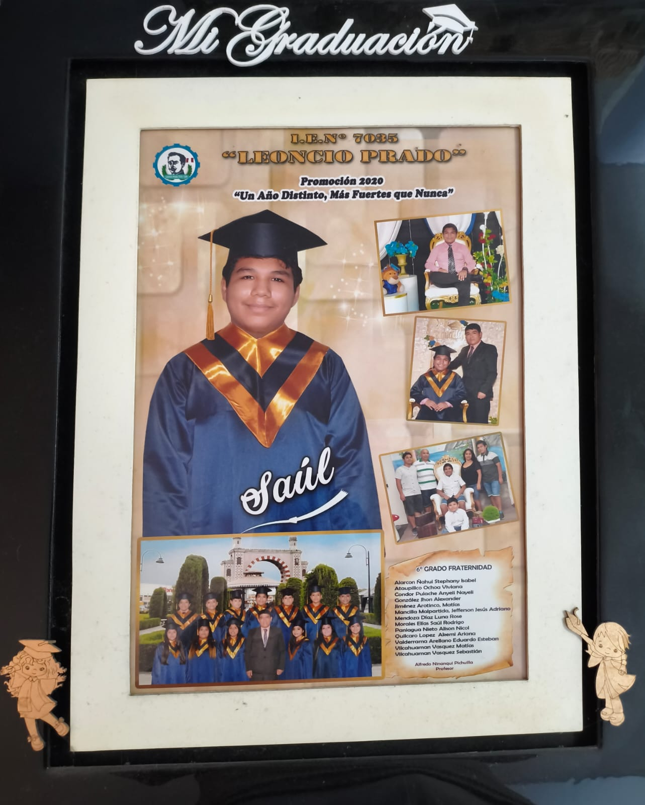
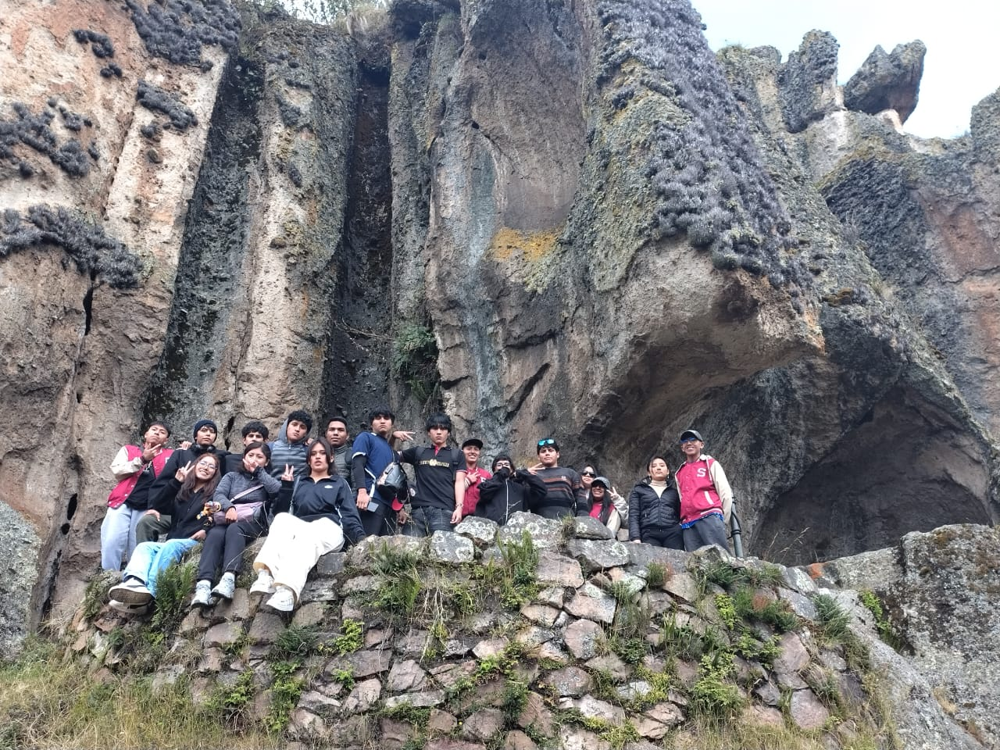
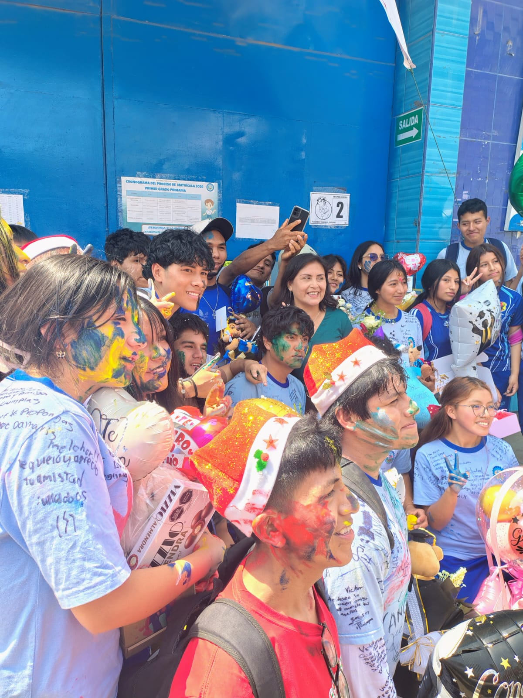

Logro 1
Graduación de Primaria
Culminación exitosa de la etapa de educación primaria, sentando las bases de mi formación personal.
Soy un profesional en formación caracterizado por mi proactividad, vocación de servicio y alto compromiso personal. Me apasiona resolver problemas complejos en infraestructura tecnológica, aprender continuamente nuevas herramientas y aportar valor en cada proyecto. Destaco por mi capacidad para trabajar en equipo, mi fiabilidad, empatía y la constante búsqueda de superación técnica y humana.

Culminación exitosa de la etapa de educación primaria, sentando las bases de mi formación personal.

Experiencia enriquecedora de viaje cultural que me permitió ampliar horizontes y perspectivas.

Cierre de la etapa escolar de educación secundaria con un sólido compromiso de superación académica.

Culminar con excelencia académica la carrera técnica en Administración de Redes y Comunicaciones.
Continuar mi desarrollo académico convalidando estudios para obtener el grado universitario en Ingeniería.
Consolidarme en un empleo estable dentro del área de infraestructura, redes y conectividad.